Big Orange Crayonmusical thingsTiger Saw, The Naysayer, Tara Jane O'Neil, and Ida at the Flywheel, November 6th 2000 Pictures at the bottom! This is the second time I've seen Ida and the second time that I've travelled over a hundred miles to do so. Each time has been very worth it. Not only was this my first time at the Flywheel, it was my first time going anywhere in Massachusetts that wasn't Boson or the ocean. Whatever that means. It wasn't as hard to find as I thought it would be or as I made it - I thoroughly searched the wrong section of route 141, but I eventually found it with about an hour of time to kill. Once I went inside, the Flywheel was totally awesome - I've never gone to a show in a place like it. It had a very home-like atmosphere which was very cool and there was no smoking or drinking which made me happy because there weren't the usual bad odors that come from shows. Rah. Tiger Saw was the first band to play. They were the only band that's not involved with the Ida-Retsin conglomerate, and they played a calm, sweet show. The reminded me of Metronome sometimes and Low at other times. I would have bought something from them, but they weren't selling anything. I think if they put anything out, I'll snatch it up though. The Naysayer came on next and did a really fun show. At different times during their show, Tara Jane ONeil came up and played bass and guitar, and not necessarily in tune with the rest of the band, but it was all good. I was really taken in by the song "Currency" and it's still my favorite song off of their new album (Deathwhisker, which I bought after the show). Tara Jane ONeil was the next person to play and her show was just absolutely beautiful and inspiring. I also bought her album after the show (and accidentally put a big gash on the b-side after the first time I played it...). She started off by herself and was joined by Dan Littleton and Ida Pearl at different points. I'd kinda say her songs remind me of Jodi's songs in the Secret Stars. Ida played last and they sounded amazing. It weird - I was really impressed by the sound quality at this show and it's not something that I normally notice. It was rad, though, you'll have to take my word for it. They were drumless this time, with the band being just Dan, Liz and Karla and sometimes Ida Pearl and Tara Jane. At various points during the show, they threatened to cover John Cougar Melloncamp songs. I laugh. Unfortunately, about three songs into Ida's set, my camera went insane and I wasn't able to take any more pictures, but at least I got a few. I remember being worried that after driving alone for two hours and having to drive back the same distance that I might not feel like I should have gone, but Ida put all my fears regarding the distance and my camera to rest. Beautiful things have a way of doing that. Pictures:: Tiger Saw 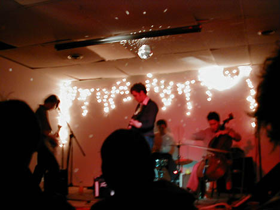 The Naysayer 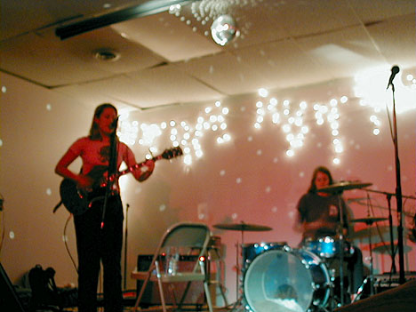 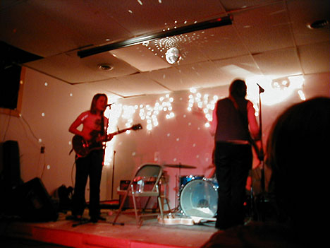 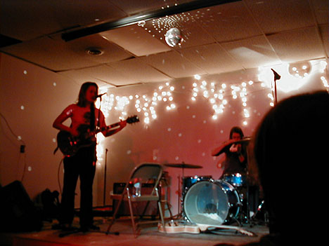 Tara Jane ONeil 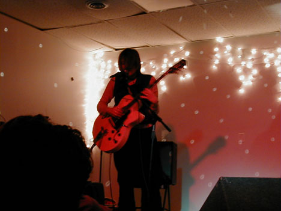 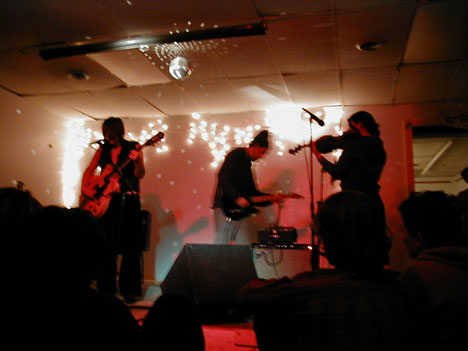 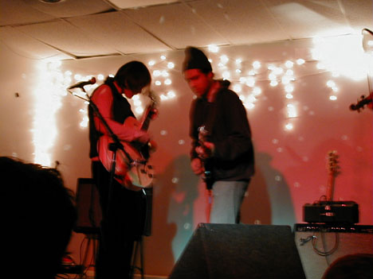 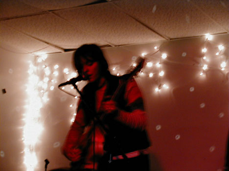 Ida 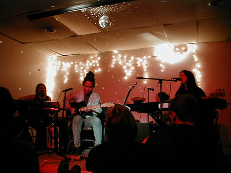 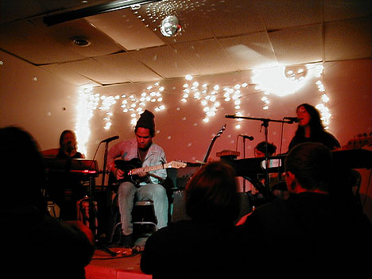 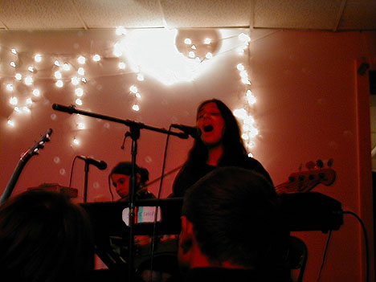 Doing all the html for this took too long - my Cap'n Crunch is soft now. |